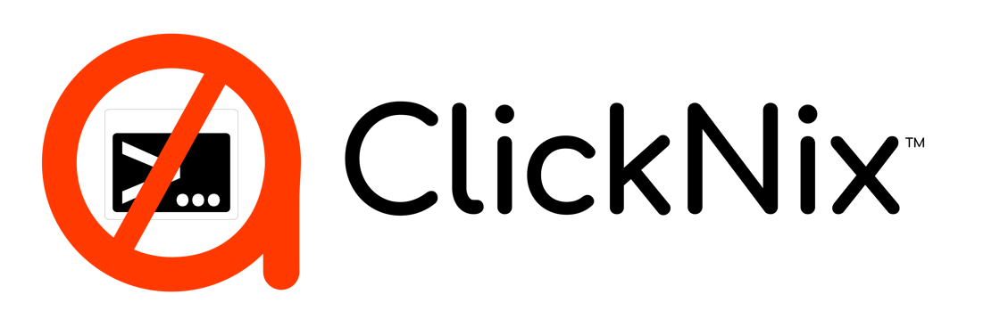

This site contains malware
ClickNix prevented this site from loading because indicators of compromise have been triggered. Notification has been sent to warn defenders in the community to protect other users from this risk also.
For your safety close this tab / window. If this is a trusted service you have used before in the past we suggest you reach out to the site owner to warn them about this infection.
Continue to Site
Warning: ClickFix attacks often masquerade as a Captcha (Prove that you are a human request) and ask the human to copy and paste a malicious command into their Terminal / Command Prompt / PowerShell. No legitimate Captcha service will ever ask you to paste commands into your Terminal. Note that ClickFix attacks often deceive users by using keyboard shortcuts to open your Terminal and paste these commands out of sight from users. Never do this.
Get more information about ClickFix attacks from the community adamnet.io/clickfix (opens in a new tab)